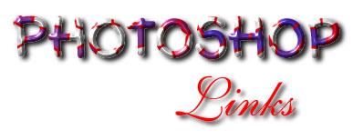

- Adaptive Solutions
Windows Plugin FTP DirectoryA Cybermesh demo and some assorted other
plug-ins can be aquired here.
- AFH Free Photoshop Plugin
FiltersAFH Beveler Plugin Filters allow one step creation of beveled
buttons, etc. This is PC only, but Versions for other platforms can be generated
using Filter Factory and the sources included in the zip file.
- Alf's Filters and
Plugins PageHere you can find some interesting sites containing
information related to Adobe Photoshop and digital photography in general.
- Alf's GallerySome
pictures that Alf grabbed on the net and gave a little treatment. Check em' out!
- Alf's Tips I : Creating
and Using Displacement MapsThis tip covers a very simple and yet
powerful technique, that every Photoshopper should be aware of: the creation and
use of displacement maps. Since it involves the use of alpha channels it is a
great way for beginners to learn how they can be used.
- Alf's Tips II : Creating
ButtonsCreating Buttons using Displacement Maps in 3 steps.
- Alf's Tips III : Border
FXAlf hands over another tip and saves you some money in the process.
- Alien Skin Home PageAlien
Skin SoftwareAlien Skin Software was founded in 1993 with a mission to create
add-on technology for graphical applications. These small high-tech applications
take advantage of Alien Skin's strength in graphics; while their size allows
rapid development. In July 1995, version 2.0 of The Black Box was
released. Version 2.0 contains 10 filters which support previews and Photoshop
3.0 layers. Version 2.0 is PowerPC accelerated for the Macintosh and is 32-Bit
accelerated for Windows 95 and Windows NT. Stylist 1.0, Alien Skin's second
product, was released in the first quarter of 1996. Stylist, a plug in
for Adobe Illustrator 6.0, adds style sheets and live effects while giving the
user a unique floating palette interface. Future plans include releasing another
set of Photoshop plug ins in the last quarter of 1996, and pelting innocent
passersby's with rubber aliens at trade shows.
- AMUG
Photoshop TipsSome nifty hints by Jim Metcalf of the Arizona Macintosh
users group.
- Andromeda SoftwareSeries 1
include: cMulti,sMulti, Designs, Mezzo, Diffract, Prism, Rainbow, Halo, Star,
Reflection and Velocity. Series 2 offers true 3D surface wrapping, viewpoint
control, image and surface manipulation, shading and 3D scene building. Series
3: Line Conversion and Mezzotint Master... reinvented for the desktop. Convert
your greyscale images to Mezzotints, Mezzograms, Straight Line Screens, Line
Patterns, Mezzoblends and Specialty Screens.
- Anti-aliasing
guide from Wide Area CommunicationsOne of the most important techniques
in making graphics and text easy to read and pleasing to the eye on-screen is
anti-aliasing. Anti-aliasing is a cheaty way of getting round the low 72dpi
resolution of the computer monitor and making objects appear smooth. Find out
the scoop here.
- Apple
FTP Plugin DirectoryYou guessed it, a whole buch of Mac stuff!
- ARIS FTP Mac Plugin
DirectoryA plethora of Boxtop filters, and the elusive "sucking
fish" filter has been spotted there as well.
- Auto F/XProduces a variety of
products including Photo/Graphic Edges 3.0 which create special effects that can
easily be applied to a color or gray scale image to make it really look
distinctive. These edge effects can help enhance the tone and feeling of an
image by giving the photo added dimension and character. Works with any image -
regardless of resolution, size or proportions. Each volume contains thousands of
uniquely crafted edge effects and comes with a complete catalog of effects and
full color manual.
- Boxtop Software
Plug PageThere is an endless supply of filters here including the new
PhotoGIF 2.0 plug-in for Mac Photoshop. Features include full support for
creating and editing GIF animations; advanced proprietary color reduction
capabilities including super palettes and a built in Netscape palette option; a
transparency preview with the most advanced transparency tools available
including a halo removing edge tool and touch up brush, transparency by color or
alpha channel, support for bitmapped, greyscale, indexed and RGB image modes,
and new compression optimizations that allow you to make the smallest GIF files
possible plus many, many more.
- Cool Type tips and tricks in
PhotoshopThis page contains some cool typing hints & tricks for
Adobe Photoshop users. Almost all of them are based on basic channel operations.
- Creating
3D ButtonsA short tutorial on using Photoshop 3.0 to create 3D buttons
for use on Web pages. The tutorial assumes some prior experience with Photoshop
3.0.
- Creating
Beveled ButtonsHow to make the "generic" grey bevelled buttons
that can be used to make a large variety of colored, bevelled buttons.
- Creating
Chiseled Text Overview: Run the KPT Gradient Designer on a type
selection to create a mask to be used for the Displace filter and Lighting
Effects; apply both Þlters to create raised, chiseled type; make an
adjustable shadow with blurred type and a layer mask.
- Creating Chrome
TextOne solution to run-of-the-mill headlines and banner messages—chrome
type created with ten steps in Photoshop.
- Creating Cutouts, Fire,
Lightening, and more10 "ticks" that don't suck! Er, just go
look...
- Creating Halftoned TextThis
technique is brief; the results, cool. It is also versatile, since you can
replace halftoning portion can be replaced by any filter you choose to use. From
Adaptive Solutions.
- Creating
MontagesOverview: Open a background image file; add collage elements by
selecting, dragging, dropping, and creating layer masks. From WOW Book 3.
- Creative
TechniquesA new Photoshop technique and stunning image every other week
from Hayden Publishing
- Digital DominionHigh
end Photoshop plug-in for blue and green screen compositing techniques. Cinematte
plug-in brings Hollywood-style blue and green screen compositing techniques
within everyone's reach. When combined with the Photoshop layers system,
Cinematte allows you to easily create transparencies that maintain anti-aliased
edges and fine details like hair, smoke, glass and water.
- Drew's
101 ways to make a Drop ShadowDrew say's: "Let's face it, there's
101 ways to make drop shadow. So here's the way I do it, somewhere between 1 and
101."
- Drew's
Beveled Button techniqueDrew's way to do it without a filter.
- Extensis SoftwareGreat plugin's
and much more for Mac & Windows
- Filter Factory CompendiumComplete
source of information about the Filter Factory.
- Filter Factory Discussion Group
WebsiteThe basic goal of the list is to be a catalyst for discussion
about anything related to Filter Factory, and for the free exchange of ideas.
- Formula
One Photoshop By Bruce FraserGreat article from MacUser detailing the
whole speed issue.
- Greg's Factory
Output filters2 sets of photoshop filters created with Filter Factory.
Includes, Spotlight, Waffle, Edge Effects, Warp, Splash, Neon Edges, Shear
Tiles, Blowout and more. Most of the filters are available for both Windows and
Macintosh
- Guy's Digital Imaging
TipsMost are tips for Photoshop, but some are probably applicable to
other applications as well. Some tips are Mac-specific, sorry about that PC
people!
- Hands on Training for
Photoshopfrom DocOzone and Apocalypse Studios
- How to use
Quick Mask to create special photo edgesThis is a PDF download, so be
aware when you click here!
- Index of Photoshop
DigestThis is a searchable index of the PHOTSHOP mailing list. The list
is maintained by the Fine and Performing Arts Department of Governors State
University in University Park, Illinois.
- Laurie McCanna's
Photoshop Tips and TechniquesGreat techniques for anti-aliasing, balls,
beveling, speeding up your work, and much more! If you're getting started with
Photoshop or been around the block, you'll find something here.
- Mac Plugin ArchiveA
whole bunch, just go look...
- MetaTools Home PageKPT, you
know what it is!
- Monotype
DTP Resource CDThere's plenty to be had for Photoshop users here.
Plug-ins, etc. Go to this
page for a special offer from Monotype and desktopPublishing.com.
- Kai's Power Tips and Tricks for
Adobe PhotoshopTutorials on making basic WWW graphics for Web designers
by Tom Karlo, one of the maintainers of the site.
- KPT Discussion ForumVisitors
to our site will be able to discuss the site and the tutorials and resources
thry provide. From MIT.
- Optimizing
Photoshop for the WebPhotoshop is stupid: it doesn't understand the
brave new 72dpi, modem-friendly world we are trying to to create on the Web.
Before you let it out on to the Internet on its own, it is a good idea to
Net-train it a little, here!
- PC Resources
for PhotoshopHUGE page devoted to Photoshop PC
- PEI TutorialsPHOTO>Electronic
Imaging tutorials provide step-by-step descriptions of how featured artists
assemble the images seen on their pages. Every issue has something for everyone.
- Photo Electronic Imaging Home
PageSite designed for electronic imaging professionals.
- Photoshop
3 WOW BookYou can find some excerpts from the book here to peruse.
- Photoshop AnswersSend
Jason a question on either Photoshop oe Pagemaker, and he'll send you the
answer. But you'd better be nice!
- Photoshop ArchiveThis site
is not maintained or endorsed by Adobe. It's run by Adaptive Solutions and
contains quite a bit of goodies.
- Photoshop CafeThis
web page introduces casual users to some of Photoshop's more powerful features.
- Photoshop CentralThis
page pays tribute to Photoshop, the greatest image processing software ever
written... Links to resources, online FAQs, pictures etc
- Photoshop f/x
Online CompanionThe purpose of this page is to provide support to owners
of Photoshop f/x, and information about the book to those who have not purchased
a copy yet.
- Photoshop and
other Photo book resourcesThe source for information on books about
Adobe Photoshop.
- Photoshop
Professional Tips & TricksPart of these tricks are of interest to
Web designers, other ones - for "real-world designers" (those
who deal with printed media), some tricks will be interesting for both. Most of
the things described here are undocumented features.
- Photoshop in Black and
WhiteHalftones, for most graphics professionals, are at least as
important as color photographs and for some, color just never happens. While
there are many books that help with photoretouching and image manipulation most
emphasize only the more gee-whiz color retouching techniques. Photoshop in Black
and White is a guide to using the black and white editing tools available in
Adobe Photoshop for reproduction purposes.
- Photoshop Q&A'sThis
page was created to document questions that photoshop users have and the answers
which other photoshop users have supplied to them
- Photoshop Tip of the
WeekA new tip each week. There is also a mailing list available as well.
- Photoshop
to a Film RecorderIn order to print to film, you will be using the LFR
Film Recorder. You will also need 100 Speed Ektachromefilm. Any other type of
film may not give the best quality. Here's the lowdown.
- Photoshop
TutorialThis document contains a general guide to using the basic
features of Adobe Photoshop.
- Picture Man Collection vol.2:
RUBBERNew plasticity program with easy-to-use tools and icons to create
deformed images. 21 tools: from Warp, Whirl, Page Curl to unique Rubber,
Explosions and Collapses.
- Raytracing in PhotoshopRaytracing,
a rendering technique that excels at calculating shadows, reflections, and
refractions, is often held up as a standard against which to judge all other 3D
rendering.Check it out here.
- RealTexture Toolswork
as Adobe Photoshop plugins, thus allowing the user the full power of
Photoshop while easily creating textures from a variety of sources. You can also
see an online demonstration
here.
- Retouching in PhotoshopDan
Loffler presents a variety of tips and techniques.
- Rice's Photoshop
TutorialTips for layers, channels, selections, and more.
- Software School's Tips for
PhotoshopA collection of quickie tips.
- The Photshop
Mail-list World-Wide Web PageCentral point of exhibition by and for the
subscribers of the Photshop mailing list.
- The Plug PageBy
Boxtop Software.
- Wern's Photoshop TipsLooks
like this one is in German. Fishing around may undercover English.
- WildRiverSSKWildRiverSSK
is a suite of seven Photoshop compatible filters for Macintosh. These filters or
plug-ins add functionality to Photoshop by allowing the user to manipulate
color, simulate 3-D effects, and alter the overall appearance of an image. The
great advantage of WildRiverSSK is that it makes these manipulations virtually
effortless and fast.